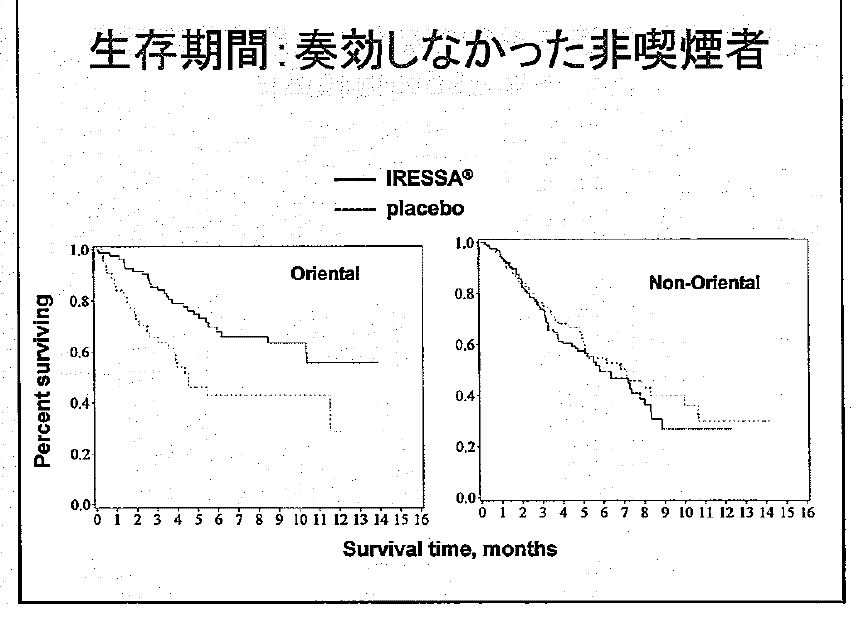
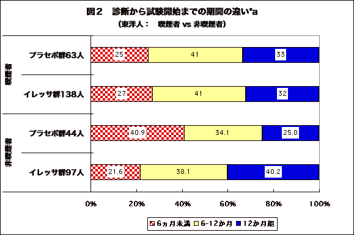

2005年3月10日開催された第２回ゲフィチニブ検討会で配布された資料から判明した重要な事実を報告する。配布資料は厚労省ホームページから入手可能である。
3月10日の第2回ゲフィチニブ検討会が開催されたが、今回も、アストラゼネカ社は長々と非本質的なデータの提示に終始した。相変わらず、サブグループ解析を多用した。本来サブグループ解析の妥当性が示されたとしても結論できない。まして、サブグループ解析の妥当性を検証するために必須も両群の背景因子は提示しないまま、延々と説明を続けたのでは無意味である。
アストラゼネカ社はまとめで、ＩＳＥＬの結果は日本人に認められている有効性と安全性をサポートするものである、とまで言い切ったが、これは言語道断である。
検討会委員からは、統計学的問題点、安全性データなど、第1回検討会のときよりも、実質的議論が加えられたという印象はあったが、今一つ踏み込んだ指摘がなかった。
ただ、今回のまとめでは、｢東洋人かつ非喫煙者で生存率改善が示唆された｣「ただし、結論には達していない」との含みがあることが座長から明言された。
アストラゼネカ社は、第2回ゲフィチニブ検討会でも、「東洋人だけ」には「延命効果が示唆された」と主張し続けた。多変量解析の結果でも差が有意であったという。
ところが、速報No48でも指摘したように「東洋人全体」を「喫煙者」と「喫煙歴のない人（非喫煙者）」とに分けると、喫煙者ではまったく延命効果がなく、むしろプラセボ群のほうがわずかに長いほどであった（表：喫煙者、プラセボ群6.3か月に対して、イレッサ群5.7か月）。結局、イレッサ群で延命効果がありそうなのは、東洋人でタバコを吸わない人だけであった。
「東洋人」のプラセボ群の「喫煙者」と「非喫煙者」の生存期間中央値を比較すると、非喫煙者の寿命の方が、喫煙者より短かった(非喫煙者<4.5か月>対喫煙者<6.3か月>）。通常、非東洋人のように、喫煙者の方が寿命が短いものである。したがって、これはこれまでにも指摘したとおり奇異な現象である。このことから、イレッサ群とプラセボ群へのランダム割付はされず、重大な偏りがあるにちがいない、との疑問を増幅させるものであった。
表：喫煙者と非喫煙者別生存期間（中央値）：ISEL試験結果より
（原資料は、資料No2−1 、p17の上段スライド：資料１）
| 対 象 | 喫煙歴なし（374人） | 喫煙者（1318人） | 全 体 | |||
|---|---|---|---|---|---|---|
| イレッサ群 | プラセボ群 | イレッサ群 | プラセボ群 | イレッサ群 | プラセボ群 | |
| 東洋人 ※a （342人） |
97人 （※b） | 44人 <4.5か月> |
138人 5.7か月 | 63人 <6.3か月> |
9.5か月 | 5.5か月 |
| 非東洋人 （1350人） |
153人 7.3か月 | 81人 7.1か月 |
741人 4.8か月 | 375人 4.8か月 |
5.2か月 | 5.1か月 |
| 全 体 （1692人） |
8.9か月 | 6.1か月 |
5.0か月 | 5.0か月 |
||
2005年3月10日の第２回ゲフィチニブ検討会では、診断から無作為化までの期間も含めてスライドで東洋人全体の患者背景を示した（資料No2-1、p11の上段スライド：資料２）。
このスライドから読み取れる最も重要な因子は、もともとの病気の進行が遅いか早いかを反映するデータともいえる「診断から無作為化までの期間」である。無作為化、すなわち、イレッサ群にするか、プラセボ群にするかの「割り付け(割り振り)」の時である。いわば試験開始までの期間である。これが1年以上経っている人は、すでに1年間生存しているわけで、もともと、がんの進行が遅い人、つまり、もともと長生きできることが見込める人である。
見ると、６か月未満がプラセボ群32％に対してイレッサ群25％と少ない。6-12か月は差がないので、イレッサ群には1年以上経過している人が多いようだ（プラセボ群30%に対して、イレッサ群35％）。有意とはいえない差であったが。それでも、疑問を抱くには十分な％の差である。とくに、6か月未満と6-12か月は示し、1年以上の％を示さないというのも疑問を大きくさせるに十分である。
次に奇異なデータは、アストラゼネカ社がイレッサ効果の人種差の原因として示した図である（配布資料No2-1のp19上段左のグラフ：図１）。アストラゼネカ社は、非喫煙者を、「奏功しなかった人」つまり、「がんが縮小しなかった人」どうしでイレッサ群とプラセボ群とを比較したグラフを示した（図1-左）。イレッサ群ではイレッサを使用しても腫瘍が縮小しなかった人と、プラセボ群の大部分を比較したことになる。すると、イレッサ群の方が、生存期間が長かったという、おかしな結果になった。イレッサを使ってもがんは小さくならなかった患者が、プラセボ群よりも生存期間が長かった。非東洋人では差はなく（図1-右）、どちらかといえば、イレッサ群の方が早く死亡している（反応がなく、イレッサの害も受ければ、寿命短縮の可能性があるので、こちらの方が合理的）。
アストラゼネカ社は、これこそ、「東洋人と非東洋人との差が出た理由」であり、「腫瘍が縮小しなかった患者で寿命が延長した」と、胸を張って主張した。
しかし、委員の1人が「臨床医として理解し難い」と発言したとおり、臨床医ならだれしも、おかしいと思うはずである。
しかし、この奇異な現象は、もともと長生きの人をイレッサ群に多く割り付けたなら、いとも簡単に起きることである。診断からの期間が長い人は、もともと進行が遅いため、長い生存期間が期待できる人である。
３月１０日、委員にさえも検討会当日配布された分厚い資料に、会場では十分目を通すことができなかったが、あとでじっくりとみると、最も重要な背景因子をその中に発見できた。
資料No2-2、p40の表（資料３）である。そのタイトルは「東洋人サブグループ内の試験開始時点における背景因子はよくバランスがとれていた」であるが、「診断からランダム割り付けまでの期間」の部分を取り出して、グラフにしたのが、図２である。
喫煙者ではイレッサ群とプラセボ群の期間の比率がまったく同じであるが、非喫煙者では、診断までの期間の長い人、すなわち、進行が遅く長生きが期待できる人がイレッサ群に多かったのである。診断までが短い人はプラセボ群41％に対してイレッサ群22％、診断までが1年以上と長い人がプラセボ群25％に対してイレッサ群40％であった。これは、統計学的に差が有意であった(p<0.05）。したがって、イレッサ群で生存率が高くても、イレッサで寿命が延長したとは決して言えない。
この背景因子の違いから、対象者の割り付けが、無作為にはなされておらず、作為が働いたと考えて、まず間違いないだろう。その根拠の第一は、作為的に割り付けたのでなければ、この有意差に気付けば、その要因で調整したはずであるが、そうしていないからである。多変量解析の際にこの因子を取り入れて調整すればまず間違いなく有意差はなくなるはずだが、そうしていない。これほどエンドポイントの「生存期間」に直接的に関係する背景因子に差があるにもかかわらず、肝腎の因子を調整から外したこと、そのものが意図的でなくて何であろうか。
このように最も重大な偏りをそのままにしたデータで「東洋人に効果が示唆される」というのは、詐欺にも等しい。そうとでもしなければ、延命効果を証明できないことが分かっていたからこそ、こうした不正にも等しいことをせざるをえなかったのであろう。
動物実験といい、臨床試験といい、データ操作、データ隠し、などをはじめ、不正をしなければ有効性も安全性も示すことができないイレッサは、現状ではもはや薬としての価値がないことは明らかである。
大きな偏りの存在が判明した結果、イレッサは、東洋人にも効かないことが証明されたも同然である。縮小率に人種差はないことが証明されているので、もちろん日本人への延命効果も全く期待できない。したがって、生存期間が延長する人を事前に選別できる可能性のある方法（ある種の遺伝子変異が候補として挙げられている）で選別した人だけを対象に、厳密なランダム化比較試験を実施し、延命効果が証明されない限り、一般の使用は中止すべきである。
今回明らかになった背景因子の重大な偏りは、作為的割付の結果である可能性が濃厚である。これが真実かどうかを検証するためには、国別、施設別の背景因子データが参考になる。背景の偏りが、ある国、ある施設に集中していれば、作為の可能性がさらに濃厚になるからである。したがって、国別、施設別の背景因子データが開示されなければならない。
参考文献・資料